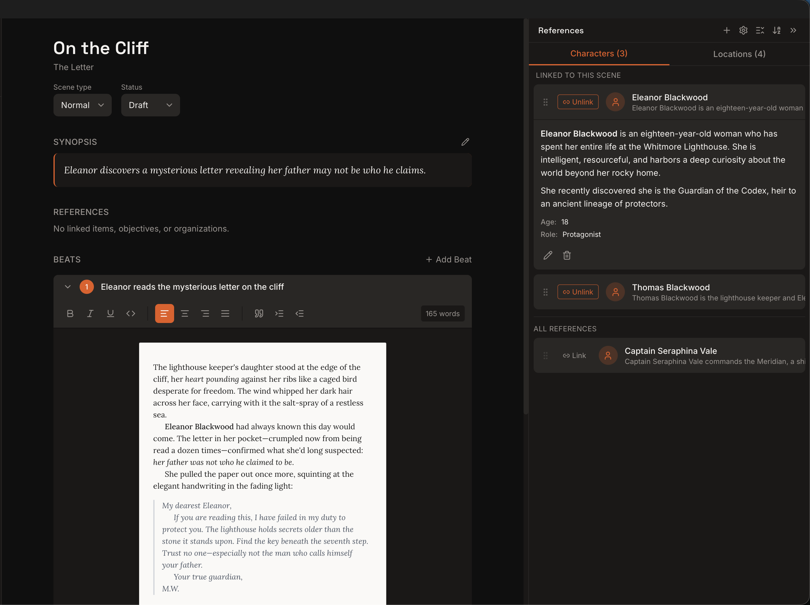

Kindling turns your existing outline into a scaffolded writing space — scene beats as expandable prompts, character details at your fingertips, and export back to the tools you already use.
Scene beats from Plottr, yWriter, or Markdown outlines appear as expandable prompt sections in the drafting view. Writers click to reveal a beat, then compose prose directly into that section. No more blank pages — your preparation is right there with you.
No more switching between your outline doc and a blank page.
The right details, right when you need them
Characters and locations tagged in your scene automatically surface in a side panel. Physical descriptions, relationships, key notes — all visible while you write, without searching through separate documents. Pin frequently-used references. Unpin when you're done.

Your character had green eyes in chapter 3. Kindling makes sure they still do in chapter 30.
Works with your existing tools
Import from Plottr (.pltr), yWriter (.yw7), Obsidian Longform, or Markdown outlines. Write your scenes in Kindling's scaffolded view. Export finished work to DOCX, Markdown, or Obsidian Longform. Kindling fits into your workflow — it doesn't replace it.
Kindling is a desktop app. Your projects live on your hard drive as SQLite files — no cloud accounts, no subscriptions, no data collection. Works offline. Always fast. Always yours.
No account required. No internet required. No strings attached.
Write without distractions
A clean, focused writing interface that keeps you in the flow. Your outline structure sits quietly in the sidebar until you need it. Beats expand only when you're ready to write into them. No cluttered toolbars, no notification badges, no feature overload — just your words and the context you need.
The best writing app is the one that gets out of your way.
Built for speed, not for bloat
Kindling is built with Rust and Tauri — the same technology behind some of the fastest desktop apps on the market. It launches in under a second, uses a fraction of the memory of Electron-based writing tools, and keeps your projects stored as lightweight SQLite files. No sluggish startup, no spinning wheels, no waiting around to get to work.
A novel-length project. A sub-second launch. That's the Rust difference.
Pick up right where you left off
Kindling remembers your cursor position, scroll state, and which scene you were working on. See a summary of the previous scene to get back into the flow. Your writing context is preserved between sessions.